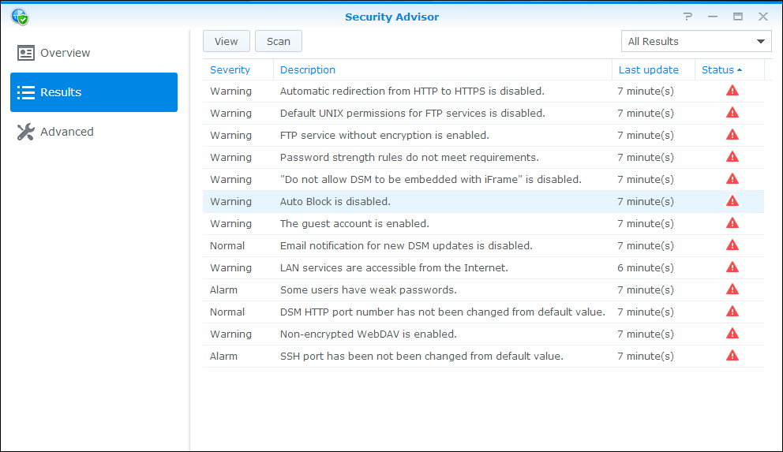
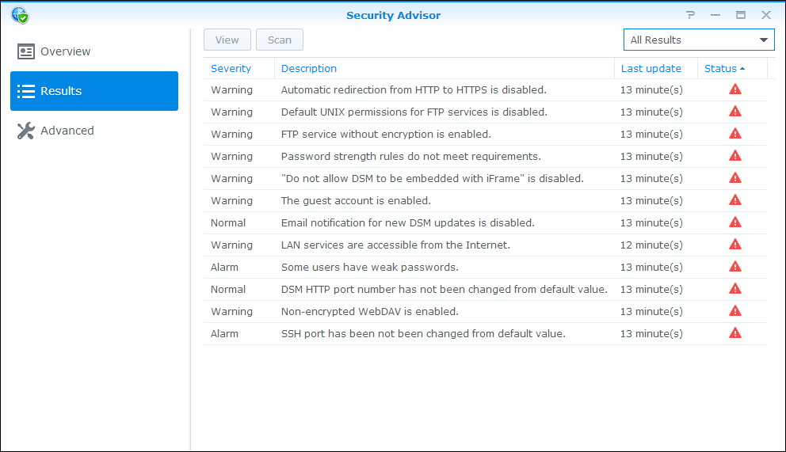

Přehled
DSM má novou funkci nazvanou Security Advisor, která vám pomůže zabezpečit váš server Synology NAS. Aplikace Security Advisor kontroluje celkovou konfiguraci vašeho serveru Synology NAS a poskytuje podrobné zprávy o stavu zabezpečení. Security Advisor vám kromě toho ukáže, jak vyřešit jakákoliv bezpečnostní rizika. Otevřete Security Advisor a zjistěte jak:
- Spustit kontrolu zabezpečení
- Zobrazit zprávy o pravidlech zabezpečení
- Ošetřit bezpečnostní rizika
1. Spustit kontrolu zabezpečení
- Když poprvé otevřete Security Advisor, budete dotázáni, k čemu server Synology NAS používáte. V závislosti na vaší situaci vyberte Doma nebo Práce a klikněte na OK. Toto nastavení můžete později vždy změnit na stránce Rozšířené.
- Security Advisor zahájí kontrolu konfigurace vašeho serveru Synology NAS. Celkový stav zabezpečení, postup skenování a výsledek shrnutí můžete sledovat na stránce Přehled.
- Jakmile se kontrola dokončí, zobrazí se výsledky pro každou kategorii pravidel zabezpečení. Security Advisor vám poskytne celkový stav pro každou kategorii a shrne veškerá zjištění o bezpečnostních rizicích.


2. Zobrazit zprávy o pravidlech zabezpečení
- Klikněte na Zobrazit výsledky na stránce Přehled. Můžete zobrazit podrobné informace o dokončené kontrole na základě jednotlivých zpráv.
- Dvakrát klikněte na kterékoli pravidlo zabezpečení, čímž otevřete podrobnou zprávu. Každá zpráva může pro každé pravidlo zabezpečení obsahovat informace o parametrech, jako je Závažnost, Popis, Podrobnosti a Doporučená akce.


3. Ošetřit bezpečnostní rizika
Podívejme se na příklad narušení bezpečnostního pravidla a projděme si, jak ho ošetřit.
- Security Advisor identifikuje potenciální bezpečnostní riziko při jakémkoli narušení bezpečnostního pravidla. Zde Security Advisor detekuje případ „Automatické blokování je deaktivováno“.
- Otevřete narušené bezpečnostní pravidlo a zobrazte podrobné informace. Pod hlavičkou Doporučená akce poskytne Security Advisor pokyny, jak toto bezpečnostní riziko ošetřit.
- Klikněte na tlačítko Otevřít, čímž přejdete přímo na odpovídající stránku s nastavením, a řiďte se pokyny v části Doporučená akce.
- Na stránce Výsledky opět zkontrolujte narušené bezpečnostní pravidlo tak, že dané pravidlo vyberete a kliknete na Zkontrolovat. 
- Pro toto bezpečnostní pravidlo nejsou detekována žádná bezpečnostní rizika. Security Advisor vám bude dál pomáhat při identifikaci potenciálních bezpečnostních rizik a bude doporučovat kroky, jak tato rizika odstranit. Udržujte svůj server Synology NAS v bezpečí prováděním pravidelných kontrol pomocí aplikace Security Advisor! 